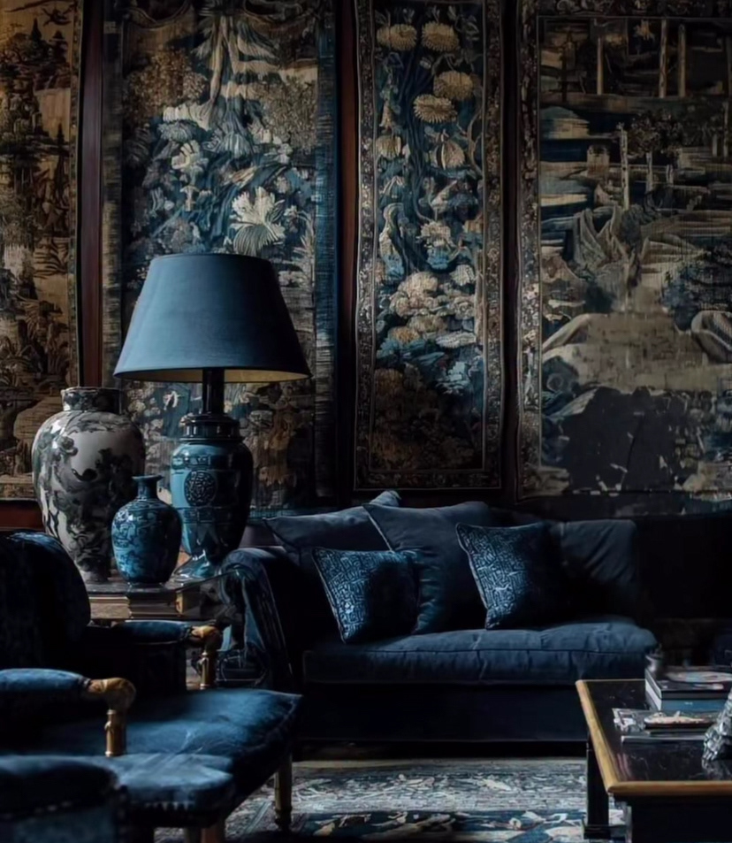
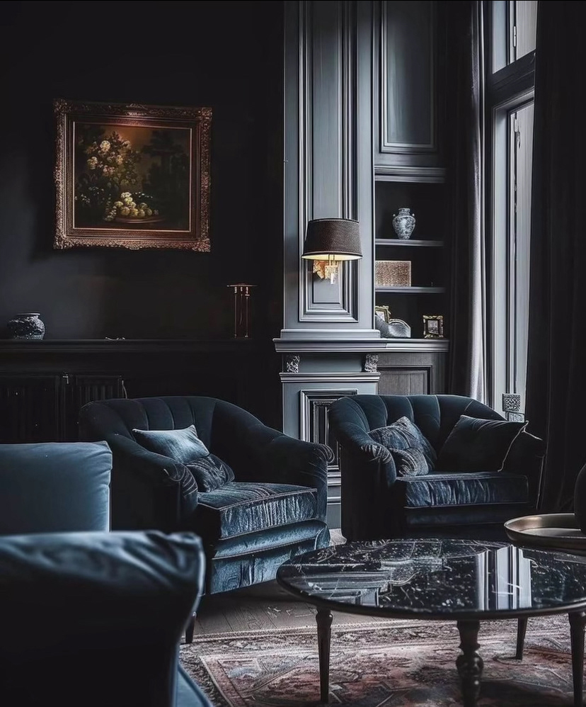
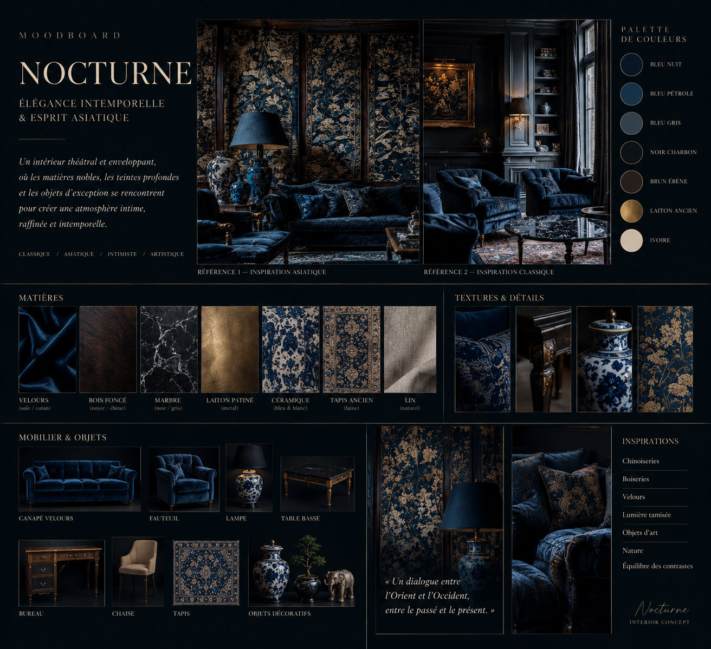

Nocturne Interior
2026Nocturne Interior explores the transformation of an existing living space into a theatrical and immersive environment. Deep blue tones, shadow, antique materials and curated objects create an interior suspended between memory and imagination.


